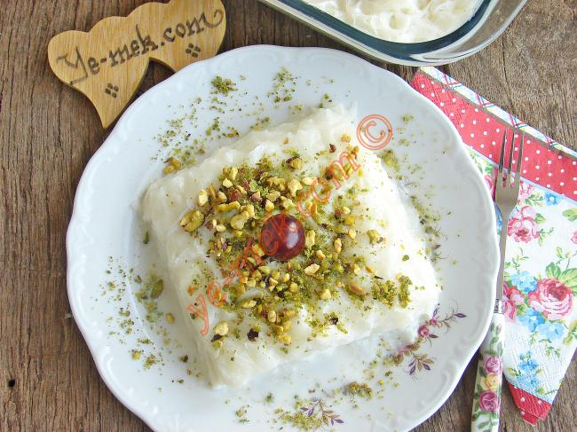

Hem Türk mutfağının hem de Ortadoğu mutfağının klasik lezzetlerinden biri olan güllaç, özellikle Ramazan sofraları için vazgeçilmez! Market raflarını süslemesiyle Ramazan’ı müjdeleyen güllaç tatlısı tarifini hazırlamak o kadar kolay ki! Evde güllaç yapımı pratik oluşu bir yana, tüm gün tutulan orucun ardından yenen ağır akşam yemeğinin ardından servis edilebilecek en hafif tatlılardan biri! Cevizli güllaç tarifine kim hayır diyebilir ki? Siz de ister nar taneleriyle süsleyin, isterseniz boool ceviz doldurup Hindistan cevizi ile tatlandırın. Damak tadınıza göre dilediğiniz güllacınızı süsleyebileceğinizi hatırlatalım!
Rate:

Güllaç Malzemeleri:
| Malzeme | Miktar |
|---|---|
| 10 yaprak | güllaç |
| Süt | 7.5 su bardağı |
| toz şeker | 2 su bardağı |
| ceviz, çekilmiş | 100 gram (g) |
| gül suyu | 2 yemek kaşığı |
Güllaç Tarifi Nasıl Yapılır?
- Sütü ve şekeri tencereye alarak ısıtın, şekerler tamamen eriyince ocaktan alın.
- Süt oda sıcaklığında ılınmaya bırakın.
- Güllaç yaprağının parlak kısmı üste gelecek şekilde derince bir tepsiye yerleştirin.
- Üzerine her yanı ıslanacak şekilde bir iki kepçe süt dökün.
- Beş güllaç yaprağı için aynı işlemi tekrarlayın ve 5. katı da ıslattıktan sonra bu kata ceviz serpip, üzerine diğer güllaç yapraklarını aynı şekilde ıslatarak yerleştirin.
- Kalan şekerli sütten bir su bardağını ayırın.
- İçerisine 2 yemek kaşığı gül suyu da ekleyip tatlının üzerine gezdirin.
- Tatlıyı en az 2-3 saat buzdolabında dinlendirdikten sonra üzerini isteğinize göre süsleyerek ve her porsiyon için 1 top dondurma ile servis edebilirsiniz.